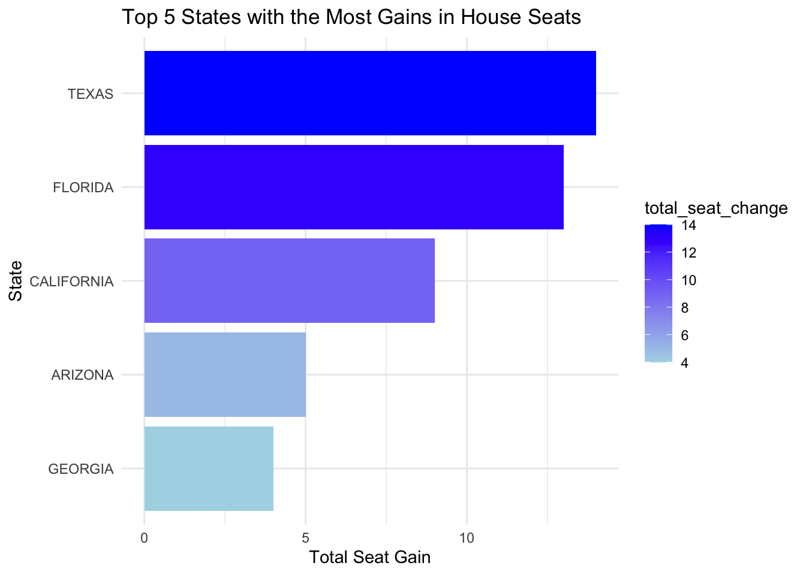
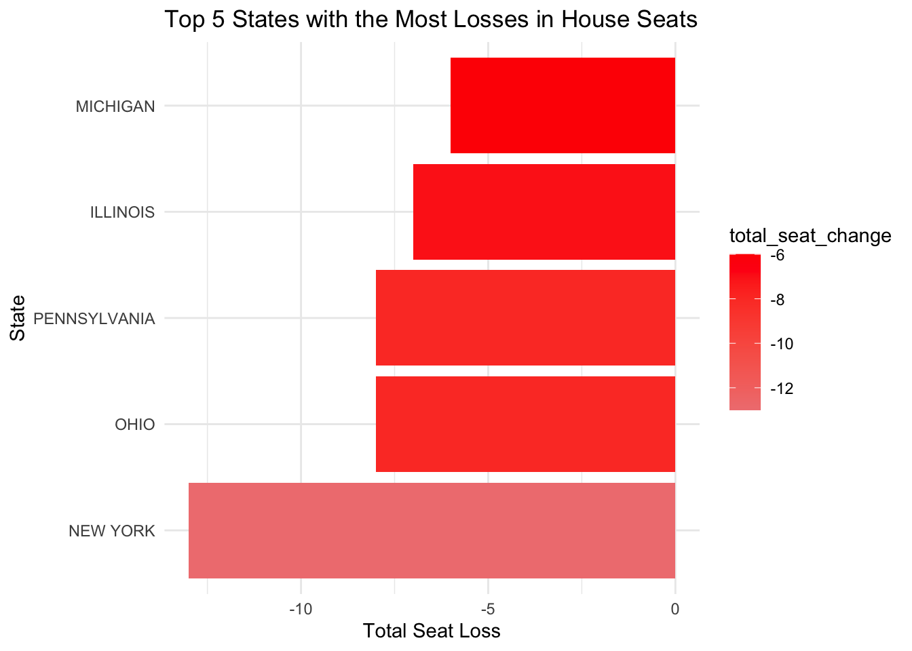
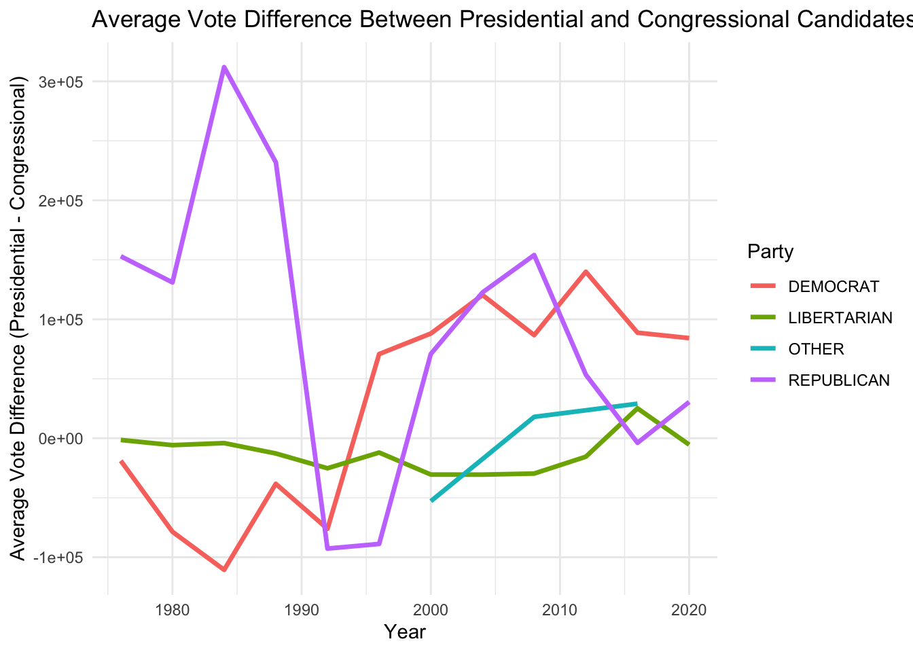
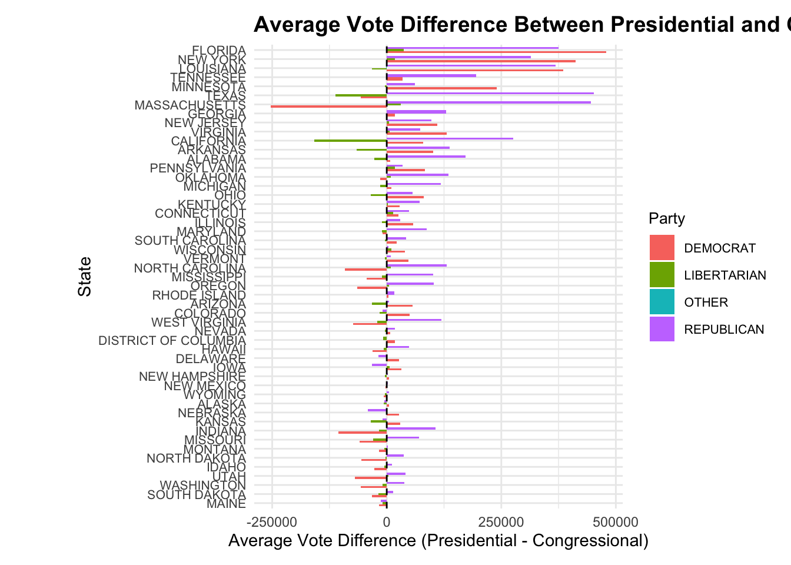
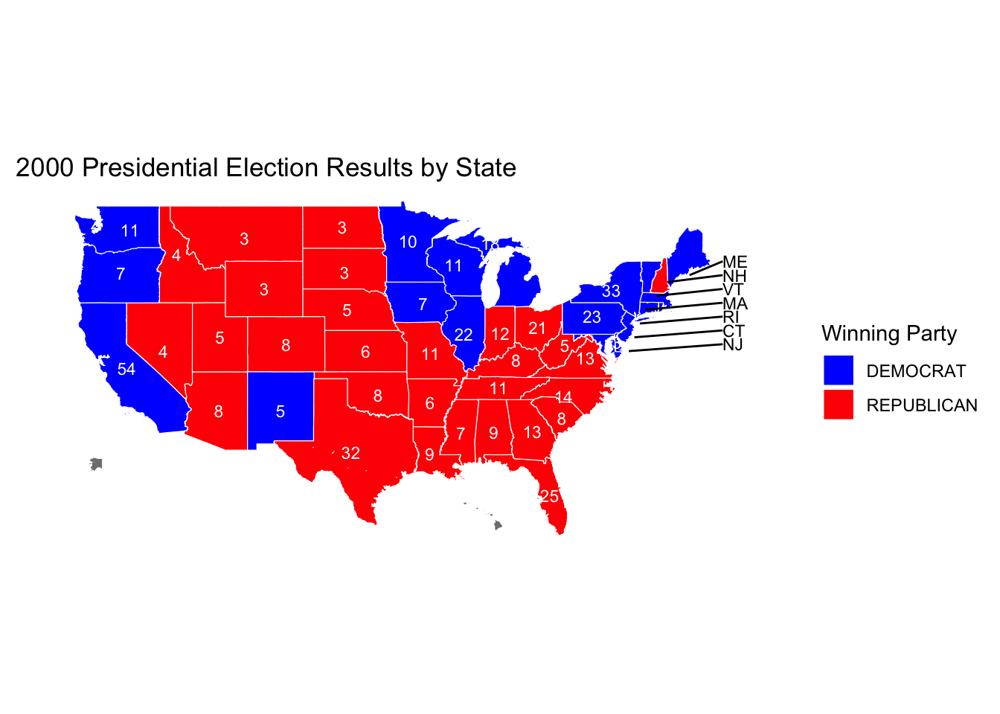
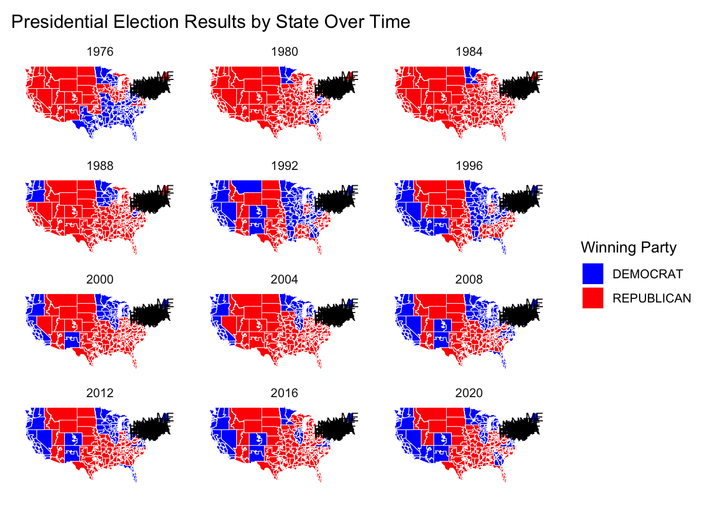

library(sf)
library(ggmap)
library(tidyverse)
library(ggplot2)
library(dplyr)
library(readr)
library(knitr)
library(gganimate)Do Proportional Electoral College Allocations Yield a More Representative Presidency?
Libraries Used
We have downloaded Congressional Shapefiles 1976-2012 fully automated using the code shown below.
Data I: US House Election Votes from 1976 to 2022
# Load the data
President_data <- read_csv("/Users/aachalghimire/Documents/GitHub/STA9750-2024-FALL/data/mp03/1976-2020-president.csv")
house_data <- read_csv("/Users/aachalghimire/Documents/GitHub/STA9750-2024-FALL/data/mp03/1976-2022-house (1).csv")
# Display the first few rows of each dataset in a table format
kable(head(President_data), caption = "Preview of President_data (First 6 Rows)")| year | state | state_po | state_fips | state_cen | state_ic | office | candidate | party_detailed | writein | candidatevotes | totalvotes | version | notes | party_simplified |
|---|---|---|---|---|---|---|---|---|---|---|---|---|---|---|
| 1976 | ALABAMA | AL | 1 | 63 | 41 | US PRESIDENT | CARTER, JIMMY | DEMOCRAT | FALSE | 659170 | 1182850 | 20210113 | NA | DEMOCRAT |
| 1976 | ALABAMA | AL | 1 | 63 | 41 | US PRESIDENT | FORD, GERALD | REPUBLICAN | FALSE | 504070 | 1182850 | 20210113 | NA | REPUBLICAN |
| 1976 | ALABAMA | AL | 1 | 63 | 41 | US PRESIDENT | MADDOX, LESTER | AMERICAN INDEPENDENT PARTY | FALSE | 9198 | 1182850 | 20210113 | NA | OTHER |
| 1976 | ALABAMA | AL | 1 | 63 | 41 | US PRESIDENT | BUBAR, BENJAMIN ““BEN”” | PROHIBITION | FALSE | 6669 | 1182850 | 20210113 | NA | OTHER |
| 1976 | ALABAMA | AL | 1 | 63 | 41 | US PRESIDENT | HALL, GUS | COMMUNIST PARTY USE | FALSE | 1954 | 1182850 | 20210113 | NA | OTHER |
| 1976 | ALABAMA | AL | 1 | 63 | 41 | US PRESIDENT | MACBRIDE, ROGER | LIBERTARIAN | FALSE | 1481 | 1182850 | 20210113 | NA | LIBERTARIAN |
kable(head(house_data), caption = "Preview of house_data (First 6 Rows)")| year | state | state_po | state_fips | state_cen | state_ic | office | district | stage | runoff | special | candidate | party | writein | mode | candidatevotes | totalvotes | unofficial | version | fusion_ticket |
|---|---|---|---|---|---|---|---|---|---|---|---|---|---|---|---|---|---|---|---|
| 1976 | ALABAMA | AL | 1 | 63 | 41 | US HOUSE | 1 | GEN | FALSE | FALSE | BILL DAVENPORT | DEMOCRAT | FALSE | TOTAL | 58906 | 157170 | FALSE | 20230706 | FALSE |
| 1976 | ALABAMA | AL | 1 | 63 | 41 | US HOUSE | 1 | GEN | FALSE | FALSE | JACK EDWARDS | REPUBLICAN | FALSE | TOTAL | 98257 | 157170 | FALSE | 20230706 | FALSE |
| 1976 | ALABAMA | AL | 1 | 63 | 41 | US HOUSE | 1 | GEN | FALSE | FALSE | WRITEIN | NA | TRUE | TOTAL | 7 | 157170 | FALSE | 20230706 | FALSE |
| 1976 | ALABAMA | AL | 1 | 63 | 41 | US HOUSE | 2 | GEN | FALSE | FALSE | J CAROLE KEAHEY | DEMOCRAT | FALSE | TOTAL | 66288 | 156362 | FALSE | 20230706 | FALSE |
| 1976 | ALABAMA | AL | 1 | 63 | 41 | US HOUSE | 2 | GEN | FALSE | FALSE | WILLIAM L “BILL” DICKINSON | REPUBLICAN | FALSE | TOTAL | 90069 | 156362 | FALSE | 20230706 | FALSE |
| 1976 | ALABAMA | AL | 1 | 63 | 41 | US HOUSE | 2 | GEN | FALSE | FALSE | WRITEIN | NA | TRUE | TOTAL | 5 | 156362 | FALSE | 20230706 | FALSE |
Data II
project_code <- 'mp03'
data_dir <- file.path(getwd(), "data", project_code)
if (!dir.exists(data_dir)) {
dir.create(data_dir, showWarnings = FALSE, recursive = TRUE)
}
# function to download Congressional Boundary Files 1976 to 2012
get_congress_map <- function(cong) {
data_dir_cong = file.path(data_dir,as.character(cong))
shp_file_local <- file.path(data_dir_cong,sprintf("districtShapes/districts%03i.shp", cong))
if (!file.exists(shp_file_local)){
if (!dir.exists(data_dir_cong)){
dir.create(data_dir_cong, showWarnings = FALSE, recursive = TRUE)
}
zp <- sprintf("http://cdmaps.polisci.ucla.edu/shp/districts%03i.zip", cong)
tmp_dir <- tempdir()
tmp_file <- tempfile()
suppressMessages(download.file(zp, tmp_file, mode = "wb"))
# Suppress unzip warnings
suppressMessages(unzip(zipfile = tmp_file, exdir = data_dir_cong, overwrite = TRUE))
}
# Suppress sf read messages and warnings
return(suppressMessages(suppressWarnings(st_read(shp_file_local, quiet = TRUE))))
}
congress_maps <- list()
# Loop through Congress numbers 112 to 114
for (cong in 94:114) {
# Run the function and save the result in the list with a named entry
congress_maps[[paste0("cd", cong)]] <- get_congress_map(cong)
}Data_III:Congressional Boundary Files 2014 to Present
Task 3
- Which states have gained and lost the most seats in the US House of Representatives between 1976 and 2022?
Show the code
# Load necessary libraries
library(dplyr)
library(ggplot2)
# Define redistricting years
redistricting_years <- c(1982, 1992, 2002, 2012, 2022)
# Step 1: Calculate district counts for each year and each state
district_counts <- house_data |>
filter(year >= 1976 & year <= 2022) |>
group_by(state, year) |>
summarize(district_count = n_distinct(district), .groups = 'drop')
# Step 2: Calculate seat change for each state at each redistricting year
district_changes_full <- district_counts |>
arrange(state, year) |>
group_by(state) |>
mutate(seat_change = district_count - lag(district_count)) |>
filter(year %in% redistricting_years & !is.na(seat_change)) |>
ungroup()
# Step 3: Summarize the total seat changes for each state over the entire period
total_seat_changes <- district_changes_full |>
group_by(state) |>
summarize(total_seat_change = sum(seat_change, na.rm = TRUE)) |>
arrange(desc(total_seat_change))
# Step 4: Separate the top 5 states with most gains and the top 5 with most losses
top_gains <- total_seat_changes |>
arrange(desc(total_seat_change)) |>
head(5)
top_losses <- total_seat_changes |>
arrange(total_seat_change) |>
head(5)
# Step 5: Plot top 5 states with the most gains
ggplot(top_gains, aes(x = reorder(state, total_seat_change), y = total_seat_change, fill = total_seat_change)) +
geom_bar(stat = "identity") +
coord_flip() +
labs(
title = "Top 5 States with the Most Gains in House Seats",
x = "State",
y = "Total Seat Gain"
) +
scale_fill_gradient(low = "lightblue", high = "blue") +
theme_minimal()
Show the code
# Step 6: Plot top 5 states with the most losses
ggplot(top_losses, aes(x = reorder(state, total_seat_change), y = total_seat_change, fill = total_seat_change)) +
geom_bar(stat = "identity") +
coord_flip() +
labs(
title = "Top 5 States with the Most Losses in House Seats",
x = "State",
y = "Total Seat Loss"
) +
scale_fill_gradient(low = "lightcoral", high = "red") +
theme_minimal()
Between 1976 and 2022, U.S. House seat gains were predominantly in southern and western states like Texas and Florida, reflecting demographic and economic shifts toward these regions. Population growth driven by job opportunities, economic development, and migration contributed to these states’ increased representation in Congress. Conversely, states in the Northeast and Midwest, such as New York and Pennsylvania, faced seat losses as residents moved elsewhere for better prospects. This redistribution underscores a broader trend of shifting political power, as states with growing populations gain influence in national politics, while those with declines see diminished representation. These changes reveal how economic and demographic factors continually reshape the political landscape.
In this analysis, our coding steps aim to examine the impact of New York's fusion voting system on election outcomes. We'll begin by filtering the data to focus specifically on New York State US House elections, where fusion voting is applied. Next, we define “Democrat” and “Republican” as the major parties for our analysis and standardize party names to ensure consistency. Then, we calculate each candidate's total votes across all ballot lines to capture their fusion vote count. We also compute the votes from major party lines only, simulating a non-fusion system. Following that, we identify the winning candidate in each system to compare outcomes. By joining the fusion and non-fusion results, we can pinpoint races where the fusion system led to a different result. Finally, we'll filter for cases with differing outcomes, allowing us to highlight races where fusion voting likely influenced the election result.
Show the code
# Step 1: Filter for New York State and US House elections
ny_house_data <- house_data |>
filter(state == "NEW YORK", office == "US HOUSE")
# Step 2: Define major parties
major_parties <- c("Democrat", "Republican")
# Step 3: Standardize party names
# Ensure party names are consistent (Democrat, Republican) for filtering purposes
ny_house_data <- ny_house_data |>
mutate(party = case_when(
grepl("Democrat", party, ignore.case = TRUE) ~ "Democrat",
grepl("Republican", party, ignore.case = TRUE) ~ "Republican",
TRUE ~ party # Leave other values unchanged for other parties
))
# Step 4: Calculate total votes for each candidate across all party lines (Fusion System)
# Sum up votes from all lines for each candidate
fusion_results <- ny_house_data |>
group_by(year, state, district, candidate) |>
summarize(total_votes = sum(candidatevotes, na.rm = TRUE), .groups = 'drop')
# Step 5: Calculate votes only from major party lines (Non-Fusion System)
# Include only Democrat and Republican votes for each candidate
major_party_results <- ny_house_data |>
filter(party %in% major_parties) |>
group_by(year, state, district, candidate) |>
summarize(major_party_votes = sum(candidatevotes, na.rm = TRUE), .groups = 'drop')
# Step 6: Determine winners in each system
# Fusion system winner: Identify the candidate with the highest total votes across all lines
fusion_winners <- fusion_results |>
group_by(year, state, district) |>
filter(total_votes == max(total_votes, na.rm = TRUE))|>
select(year, state, district, fusion_winner = candidate, fusion_total_votes = total_votes)
# Non-Fusion system winner: Identify the candidate with the highest votes from major party lines only
non_fusion_winners <- major_party_results |>
group_by(year, state, district) |>
filter(major_party_votes == max(major_party_votes, na.rm = TRUE)) |>
select(year, state, district, non_fusion_winner = candidate, non_fusion_total_votes = major_party_votes)
# Step 7: Join fusion and non-fusion results to compare outcomes
election_comparison <- fusion_winners |>
left_join(non_fusion_winners, by = c("year", "state", "district")) |>
mutate(different_outcome = fusion_winner != non_fusion_winner)
# Step 8: Filter to find races where the outcomes differ between Fusion and Non-Fusion systems
different_outcome_races <- election_comparison |>
filter(different_outcome == TRUE)
# Display the results in a table format
kable(different_outcome_races, caption = "Races with Different Outcomes Due to Fusion Voting")| year | state | district | fusion_winner | fusion_total_votes | non_fusion_winner | non_fusion_total_votes | different_outcome |
|---|---|---|---|---|---|---|---|
| 1976 | NEW YORK | 29 | EDWARD W PATTISON | 100663 | JOSEPH A MARTINO | 96476 | TRUE |
| 1980 | NEW YORK | 3 | GREGORY W CARMAN | 87952 | JEROME A AMBRO JR | 75389 | TRUE |
| 1980 | NEW YORK | 6 | JOHN LEBOUTILLIER | 89762 | LESTER L WOLFF | 74319 | TRUE |
| 1984 | NEW YORK | 20 | JOSEPH J DIOGUARDI | 106958 | OREN J TEICHER | 102842 | TRUE |
| 1986 | NEW YORK | 27 | GEORGE C WORTLEY | 83430 | ROSEMARY S POOLER | 81133 | TRUE |
| 1992 | NEW YORK | 3 | PETER T KING | 124727 | STEVE A ORLINS | 116915 | TRUE |
| 1994 | NEW YORK | 1 | MICHAEL P FORBES | 90491 | GEORGE J HOCHBRUECKNER | 78692 | TRUE |
| 1996 | NEW YORK | 1 | MICHAEL P FORBES | 116620 | NORA L BREDES | 93816 | TRUE |
| 1996 | NEW YORK | 30 | JACK QUINN | 121369 | FRANCIS J PORDUM | 97686 | TRUE |
| 2006 | NEW YORK | 25 | JAMES T WALSH | 110525 | DAN MAFFEI | 100605 | TRUE |
| 2006 | NEW YORK | 29 | JOHN R “RANDY” KUHL JR | 106077 | ERIC J MASSA | 94609 | TRUE |
| 2010 | NEW YORK | 13 | MICHAEL G GRIMM | 65024 | MICHAEL E MCMAHON | 60773 | TRUE |
| 2010 | NEW YORK | 19 | NAN HAYMORTH | 109956 | JOHN J HALL | 98766 | TRUE |
| 2010 | NEW YORK | 24 | RICHARD L HANNA | 101599 | MICHAEL A ARCURI | 89809 | TRUE |
| 2010 | NEW YORK | 25 | ANN MARIE BUERKLE | 104602 | DANIEL B MAFFEI | 103954 | TRUE |
| 2012 | NEW YORK | 27 | CHRIS COLLINS | 161220 | KATHLEEN C HOCHUL | 140008 | TRUE |
| 2018 | NEW YORK | 1 | LEE M ZELDIN | 139027 | PERRY GERSHON | 124213 | TRUE |
| 2018 | NEW YORK | 24 | JOHN M KATKO | 136920 | DANA BALTER | 115902 | TRUE |
| 2018 | NEW YORK | 27 | CHRIS COLLINS | 140146 | NATHAN D MCMURRAY | 128167 | TRUE |
| 2022 | NEW YORK | 4 | ANTHONY P D’ESPOSITO | 140622 | LAURA A GILLEN | 130871 | TRUE |
| 2022 | NEW YORK | 17 | MICHAEL V LAWLER | 143550 | SEAN PATRICK MALONEY | 133457 | TRUE |
| 2022 | NEW YORK | 22 | BRANDON M WILLIAMS | 135544 | FRANCIS CONOLE | 132913 | TRUE |
The table shows several instances between 1976 and 2006 where New York’s unique “fusion” voting system affected the outcome of Congressional races. In each of these races, the candidate who won under the fusion system, where votes from multiple party lines were combined, would have lost if only the major party votes (Democratic or Republican) were counted. For example, in 1976, Edward W. Pattison won the seat in District 29 with a total of 100,663 votes, surpassing Joseph A. Martino, who had 96,476 votes. Without fusion voting, however, Martino would have been the winner based on major party votes alone. Similarly, other races, such as those involving Gregory W. Carman in 1980 and Michael P. Forbes in 1994 and 1996, would have had different outcomes without the fusion system.
This data highlights how fusion voting can substantially impact election results, allowing candidates to leverage additional support from minor parties to secure a win that would not be possible through major party votes alone. Fusion voting provides minor parties like the Working Families Party or the Conservative Party with meaningful influence, as their endorsements can be pivotal in close races. Overall, the table underscores that the fusion system can shift the balance in New York elections, often favoring candidates who can appeal across party lines, and suggests that outcomes in these races may align differently with voter preferences in a standard, non-fusion voting system.
- In this analysis, we explore the voting trends between presidential and congressional candidates from the same party to determine if presidential candidates tend to receive more support within individual states. By comparing the average vote differences, we aim to see if voters generally prefer presidential candidates over their congressional counterparts, and whether these trends vary over time, across different states, or between political parties. Our visualizations provide insights into these patterns, highlighting notable years and states where presidential candidates either ran ahead of or behind their co-partisans. This analysis helps uncover broader trends in voter alignment within parties, potentially revealing unique cases where presidential candidates stand out in popularity compared to their congressional peers.
Show the code
# Load necessary libraries
library(dplyr)
library(ggplot2)
library(knitr)
# Filter data for presidential and congressional races
presidential_data <- President_data |>
filter(office == "US PRESIDENT")
congressional_data <- house_data |>
filter(office == "US HOUSE")
# Aggregate votes by party, state, and year for congressional and presidential races
congressional_votes <- congressional_data |>
group_by(year, state, party) |>
summarize(congressional_votes = sum(candidatevotes, na.rm = TRUE), .groups = 'drop')
presidential_votes <- presidential_data |>
group_by(year, state, party = party_simplified) |>
summarize(presidential_votes = sum(candidatevotes, na.rm = TRUE), .groups = 'drop')
# Merge datasets to compare presidential and congressional votes
vote_comparison <- presidential_votes |>
inner_join(congressional_votes, by = c("year", "state", "party")) |>
mutate(vote_difference = presidential_votes - congressional_votes)
# Calculate the average vote difference over time for each party
trend_over_time <- vote_comparison |>
group_by(year, party) |>
summarize(avg_vote_difference = mean(vote_difference, na.rm = TRUE))
# Plot: Average Vote Difference Over Time by Party
ggplot(trend_over_time, aes(x = year, y = avg_vote_difference, color = party)) +
geom_line(size = 1.2) +
labs(title = "Average Vote Difference Between Presidential and Congressional Candidates by Year",
x = "Year",
y = "Average Vote Difference (Presidential - Congressional)",
color = "Party") +
theme_minimal()
Show the code
# Calculate the average vote difference by state and party
trend_by_state <- vote_comparison |>
group_by(state, party) |>
summarize(avg_vote_difference = mean(vote_difference, na.rm = TRUE))
# Plot: Average Vote Difference by State and Party with improved presentation
ggplot(trend_by_state, aes(x = reorder(state, avg_vote_difference), y = avg_vote_difference, fill = party)) +
geom_bar(stat = "identity", position = "dodge", width = 0.7) +
coord_flip() +
labs(title = "Average Vote Difference Between Presidential and Congressional Candidates by State",
x = "State",
y = "Average Vote Difference (Presidential - Congressional)",
fill = "Party") +
geom_hline(yintercept = 0, color = "black", linetype = "dashed") + # Add zero line for clarity
theme_minimal() +
theme(
axis.text.y = element_text(size = 8),
plot.title = element_text(size = 14, face = "bold"),
legend.title = element_text(size = 10),
legend.text = element_text(size = 8),
plot.margin = margin(10, 10, 10, 50)
)
Show the code
# Save the state trend plot
ggsave("trend_by_state_plot.png", width = 10, height = 12)
# Identify notable presidents with high or low popularity relative to co-partisans
president_popularity <- vote_comparison |>
group_by(year, party) |>
filter(abs(vote_difference) == max(abs(vote_difference))) |>
select(year, state, party, vote_difference)
# Display table of notable presidents
kable(president_popularity, caption = "Notable Presidents by Vote Difference with Co-Partisans")| year | state | party | vote_difference |
|---|---|---|---|
| 1976 | ARIZONA | LIBERTARIAN | -4941 |
| 1976 | FLORIDA | DEMOCRAT | 510214 |
| 1976 | TEXAS | REPUBLICAN | 676135 |
| 1980 | CALIFORNIA | DEMOCRAT | -581671 |
| 1980 | CALIFORNIA | LIBERTARIAN | -124338 |
| 1980 | TEXAS | REPUBLICAN | 902069 |
| 1984 | CALIFORNIA | LIBERTARIAN | -78268 |
| 1984 | FLORIDA | REPUBLICAN | 1539571 |
| 1984 | TEXAS | DEMOCRAT | -745752 |
| 1988 | CALIFORNIA | LIBERTARIAN | -93432 |
| 1988 | LOUISIANA | DEMOCRAT | 628892 |
| 1988 | TEXAS | REPUBLICAN | 1202694 |
| 1992 | CALIFORNIA | LIBERTARIAN | -281944 |
| 1992 | CALIFORNIA | REPUBLICAN | -734581 |
| 1992 | LOUISIANA | DEMOCRAT | 531058 |
| 1996 | CALIFORNIA | LIBERTARIAN | -139983 |
| 1996 | LOUISIANA | REPUBLICAN | 576592 |
| 1996 | NEW YORK | DEMOCRAT | 730860 |
| 2000 | CALIFORNIA | LIBERTARIAN | -232125 |
| 2000 | FLORIDA | DEMOCRAT | 936064 |
| 2000 | LOUISIANA | OTHER | -52898 |
| 2000 | TEXAS | REPUBLICAN | 867228 |
| 2004 | CALIFORNIA | LIBERTARIAN | -164640 |
| 2004 | FLORIDA | DEMOCRAT | 1371218 |
| 2004 | FLORIDA | REPUBLICAN | 645223 |
| 2008 | CALIFORNIA | DEMOCRAT | 896748 |
| 2008 | LOUISIANA | OTHER | 17976 |
| 2008 | MASSACHUSETTS | REPUBLICAN | 790393 |
| 2008 | TEXAS | LIBERTARIAN | -246029 |
| 2012 | FLORIDA | DEMOCRAT | 845353 |
| 2012 | MASSACHUSETTS | REPUBLICAN | 490677 |
| 2012 | TEXAS | LIBERTARIAN | -158007 |
| 2016 | FLORIDA | LIBERTARIAN | 197648 |
| 2016 | LOUISIANA | OTHER | 29044 |
| 2016 | MASSACHUSETTS | REPUBLICAN | 639772 |
| 2016 | TEXAS | DEMOCRAT | 717333 |
| 2020 | MINNESOTA | DEMOCRAT | 619300 |
| 2020 | NEW YORK | REPUBLICAN | 547977 |
| 2020 | TEXAS | LIBERTARIAN | -96145 |
The analysis shows that presidential candidates generally tend to receive more votes than congressional candidates from the same party, though this trend varies over time, by state, and between parties. Historically, Republican presidential candidates, especially in the 1980s, have run significantly ahead of their congressional counterparts, though this difference has balanced out in recent years. Democrats, on the other hand, show a more balanced trend, with occasional years where congressional candidates receive more support than presidential ones, suggesting that Democratic voters may prioritize local representation.
State-level differences are evident, with states like Florida and New York showing larger vote disparities, reflecting unique political dynamics that lead voters to favor either national or local candidates more strongly. Third-party candidates generally show smaller, stable differences, indicating limited impact on overall vote trends. Additionally, certain election years highlight outlier presidential candidates who were notably more or less popular than their party’s congressional candidates. Overall, while presidential candidates often attract broader support, the level of this effect varies widely, reflecting voter tendencies to differentiate between national and local elections based on the election year, candidate appeal, and specific state issues.
Importing and Plotting Shape File Data
Task 4 Automate Zip File Extraction
Show the code
library(ggplot2)
read_shp_from_zip <- function(zip_file) {
zip_contents <- unzip(zip_file, list = TRUE)
shp_file_name <- zip_contents$Name[grepl("shp$", zip_contents$Name)]
extracted_shp <- unzip(zip_file, files = shp_file_name, exdir = tempdir())
sf_object <- suppressMessages(suppressWarnings(read_sf(extracted_shp)))
return(sf_object)
}
nyc_sf <- read_shp_from_zip("nyc_borough_boundaries.zip")
kable(nyc_sf, caption = "NYC Borough Boundaries Data")| boro_code | boro_name | shape_area | shape_leng | geometry |
|---|---|---|---|---|
| 3 | Brooklyn | 1934142776 | 728147.1 | MULTIPOLYGON (((-73.86327 4… |
| 5 | Staten Island | 1623618684 | 325910.3 | MULTIPOLYGON (((-74.05051 4… |
| 1 | Manhattan | 636646082 | 360037.5 | MULTIPOLYGON (((-74.01093 4… |
| 2 | Bronx | 1187174772 | 463180.6 | MULTIPOLYGON (((-73.89681 4… |
| 4 | Queens | 3041418004 | 888197.0 | MULTIPOLYGON (((-73.82645 4… |
Show the code
ggplot(nyc_sf,
aes(geometry=geometry)) +
geom_sf()
Show the code
ggplot(nyc_sf,
aes(geometry = geometry,
fill = shape_area)) +
geom_sf()
Task 5
Using the data you downloaded earlier, create a chloropleth visualization of the electoral college results for the 2000 presidential election (Bush vs. Gore)
In this task, we created a chloropleth map to visualize the electoral college results for the 2000 presidential election between George W. Bush and Al Gore. Using the data we previously downloaded, we mapped each state according to the winning party, with Republican states shaded in red and Democratic states in blue. The map also displays the electoral votes for each state, offering a clear visual representation of how the electoral college votes were distributed across the country. By employing geographic data and election results, this visualization highlights the regional voting patterns and provides insight into the overall electoral landscape of the 2000 election.
Show the code
library(ggplot2)
library(dplyr)
library(sf)
library(grid)
# Load and preprocess your data
file_path <- "/Users/aachalghimire/Documents/GitHub/STA9750-2024-FALL/data/mp03/1976-2020-president.csv"
election_data <- read.csv(file_path, stringsAsFactors = FALSE)
# Filter for the 2000 election and find the winner in each state
winners_2000 <- election_data |>
filter(year == 2000) |>
group_by(state) |>
filter(!writein) |>
slice_max(candidatevotes, n = 1) |>
select(year, state, state_po, candidate, party_simplified, candidatevotes, totalvotes)
# Manually create a dataset for electoral votes by state in 2000
electoral_votes_2000 <- data.frame(
state_po = c("AL", "AK", "AZ", "AR", "CA", "CO", "CT", "DE", "FL", "GA", "HI", "ID", "IL", "IN", "IA", "KS", "KY", "LA", "ME", "MD", "MA", "MI", "MN", "MS", "MO", "MT", "NE", "NV", "NH", "NJ", "NM", "NY", "NC", "ND", "OH", "OK", "OR", "PA", "RI", "SC", "SD", "TN", "TX", "UT", "VT", "VA", "WA", "WV", "WI", "WY"),
electoralvotes = c(9, 3, 8, 6, 54, 8, 8, 3, 25, 13, 4, 4, 22, 12, 7, 6, 8, 9, 4, 10, 12, 18, 10, 7, 11, 3, 5, 4, 4, 15, 5, 33, 14, 3, 21, 8, 7, 23, 4, 8, 3, 11, 32, 5, 3, 13, 11, 5, 11, 3)
)
# Merge electoral votes with winners_2000 by state_po
winners_2000 <- winners_2000 %>%
left_join(electoral_votes_2000, by = "state_po")
# Load the shapefile data and prepare it
shape_data_2000 <- congress_maps[["cd106"]]
shape_data_2000$STATENAME <- tolower(shape_data_2000$STATENAME)
winners_2000$state <- tolower(winners_2000$state)
# Ensure valid geometries
shape_data_2000 <- st_make_valid(shape_data_2000)
# Merge election data with the shapefile data
merged_data <- shape_data_2000 |>
left_join(winners_2000, by = c("STATENAME" = "state"))
# Aggregate to get one geometry per state
state_boundaries <- merged_data |>
group_by(STATENAME) |>
summarise(geometry = st_union(geometry), .groups = "drop")
# Merge with election data to add electoral votes and party information
state_boundaries <- state_boundaries |>
left_join(winners_2000, by = c("STATENAME" = "state"))
# Separate Alaska, Hawaii, and the main U.S.
alaska <- state_boundaries %>% filter(STATENAME == "alaska")
hawaii <- state_boundaries %>% filter(STATENAME == "hawaii")
continental_states <- state_boundaries %>% filter(!STATENAME %in% c("alaska", "hawaii"))
# Main map
election_map <- ggplot() +
geom_sf(data = continental_states, aes(fill = party_simplified), color = "white", size = 0.5) +
scale_fill_manual(values = c("DEMOCRAT" = "blue", "REPUBLICAN" = "red")) +
labs(title = "2000 Presidential Election Results by State", fill = "Winning Party") +
theme_minimal() +
theme(axis.text = element_blank(),
axis.ticks = element_blank(),
axis.title = element_blank(),
panel.grid = element_blank()) +
coord_sf(xlim = c(-130, -60), ylim = c(24, 50), expand = FALSE)
# Alaska inset
alaska_map <- ggplot() +
geom_sf(data = alaska, aes(fill = party_simplified), color = "white", size = 0.5) +
scale_fill_manual(values = c("GORE" = "blue", "BUSH" = "red")) +
theme_void() +
theme(legend.position = "none")
# Hawaii inset
hawaii_map <- ggplot() +
geom_sf(data = hawaii, aes(fill = party_simplified), color = "white", size = 0.5) +
scale_fill_manual(values = c("GORE" = "blue", "BUSH" = "red")) +
theme_void() +
theme(legend.position = "none")
# Add insets to main map
election_map <- election_map +
annotation_custom(ggplotGrob(alaska_map), xmin = -125, xmax = -105, ymin = 25, ymax = 35) +
annotation_custom(ggplotGrob(hawaii_map), xmin = -104, xmax = -85, ymin = 25, ymax = 32)
# Add electoral votes as labels on the map, excluding the Northeastern states
northeast_states <- c("ME", "NH", "VT", "MA", "RI", "CT", "NJ")
election_map <- election_map +
geom_text(data = continental_states %>% filter(!state_po %in% northeast_states),
aes(label = electoralvotes, geometry = geometry),
stat = "sf_coordinates", size = 3, color = "white")
# Add labels for small Northeast states as external annotations with arrows
election_map <- election_map +
annotate("text", x = -66, y = 45, label = "ME", size = 3, hjust = 0) +
annotate("segment", x = -66, xend = -69, y = 45, yend = 44, color = "black") +
annotate("text", x = -66, y = 44, label = "NH", size = 3, hjust = 0) +
annotate("segment", x = -66, xend = -71, y = 44, yend = 43.5, color = "black") +
annotate("text", x = -66, y = 43, label = "VT", size = 3, hjust = 0) +
annotate("segment", x = -66, xend = -72, y = 43, yend = 42.5, color = "black") +
annotate("text", x = -66, y = 42, label = "MA", size = 3, hjust = 0) +
annotate("segment", x = -66, xend = -73, y = 42, yend = 41.5, color = "black") +
annotate("text", x = -66, y = 41, label = "RI", size = 3, hjust = 0) +
annotate("segment", x = -66, xend = -73.5, y = 41, yend = 40.5, color = "black") +
annotate("text", x = -66, y = 40, label = "CT", size = 3, hjust = 0) +
annotate("segment", x = -66, xend = -74, y = 40, yend = 39.5, color = "black") +
annotate("text", x = -66, y = 39, label = "NJ", size = 3, hjust = 0) +
annotate("segment", x = -66, xend = -74.5, y = 39, yend = 38.5, color = "black")
# Display and save the map
print(election_map)
Show the code
ggsave("election_map_with_insets.png", plot = election_map, width = 20, height = 15)Task 6: Faceted version showing election results over time.
#| code-fold: true
#| code-summary: "Show the code"
# Prepare the election data by selecting the winner for each state and each year
winners_data <- election_data |>
filter(!writein) |> # Exclude write-in candidates
group_by(year, state) |>
slice_max(candidatevotes, n = 1) |> # Select the candidate with max votes per year, per state
select(year, state, state_po, candidate, party_simplified, candidatevotes, totalvotes)
# Convert state names to lowercase for merging with shapefile data
winners_data$state <- tolower(winners_data$state)
# Define the list of Northeast states for later labeling
northeast_states <- c("ME", "NH", "VT", "MA", "RI", "CT", "NY", "NJ", "PA")
# Prepare the base shapefile data for each Congress session in congress_maps (example uses 106th Congress)
# You could loop or modify this to adapt for multiple years if shapefiles are available per year
shape_data <- congress_maps[["cd106"]] # Replace with correct object
shape_data$STATENAME <- tolower(shape_data$STATENAME)
# Merge shapefile data with the election results for each year
merged_data <- shape_data |>
left_join(winners_data, by = c("STATENAME" = "state"))
# Generate the faceted map plot with 3 columns
election_map_faceted <- ggplot(data = merged_data) +
geom_sf(aes(fill = party_simplified), color = "white") +
scale_fill_manual(values = c("DEMOCRAT" = "blue", "REPUBLICAN" = "red")) +
labs(title = "Presidential Election Results by State Over Time",
fill = "Winning Party") +
theme_minimal() +
theme(axis.text = element_blank(),
axis.ticks = element_blank(),
axis.title = element_blank(),
panel.grid = element_blank()) +
coord_sf(xlim = c(-130, -60), ylim = c(24, 50), expand = FALSE) +
geom_sf_text(data = subset(merged_data, state_po %in% northeast_states),
aes(label = state_po), size = 3, nudge_y = 0.5) +
facet_wrap(~ year, ncol = 3) # Set 3 columns for faceting
# Print the faceted plot
print(election_map_faceted)
# Save the faceted plot as an image
ggsave("election_map_faceted_3col.png", plot = election_map_faceted, width = 15, height = 15)Task 7
Analysis
Strategy analysis
District-Level Winner-Take-All: Awards electoral votes by congressional district based on the party of each district’s representative. It can produce fragmented results and favors parties with strong local district control, leading to potential skew if districts are drawn uncompetitively.
National Proportional Allocation: Allocates votes proportionally based on the total national vote, closely aligning with the popular vote and offering a fair reflection of voter preferences without large biases. It avoids “winner-takes-all” effects, mirroring a national popular vote.
State Proportional Allocation: Divides each state’s votes proportionally based on its popular vote, giving partial credit for competitive outcomes. It reflects state preferences more fairly but may dilute impact in states with narrow margins.
State Winner-Take-All (Current System): Assigns all votes in a state to the candidate with the most votes, exaggerating victories by favoring candidates who win populous states. This can distort national preferences and amplify the influence of large states.
Identifying the Fairest Scheme and Systematic Bias
Considering the patterns, National Proportional Allocation emerges as the fairest method, as it directly reflects the popular vote without introducing winner-take-all biases. The District-Level Winner-Take-All and State Winner-Take-All schemes show tendencies to favor candidates with local or state-level control, often benefitting the party with strategically distributed support across states or districts.
Example of Impactful Election: Hypothetical Scenario
In a close election year, such as 2000, if state winner-take-all had been replaced by national proportional allocation, the election outcome might have more accurately mirrored the national popular vote. This change could have eliminated the dramatic winner-take-all impact seen in states like Florida, where a narrow margin decided all ECVs for one candidate. Such a shift could have potentially altered the final result, demonstrating how impactful these schemes can be.